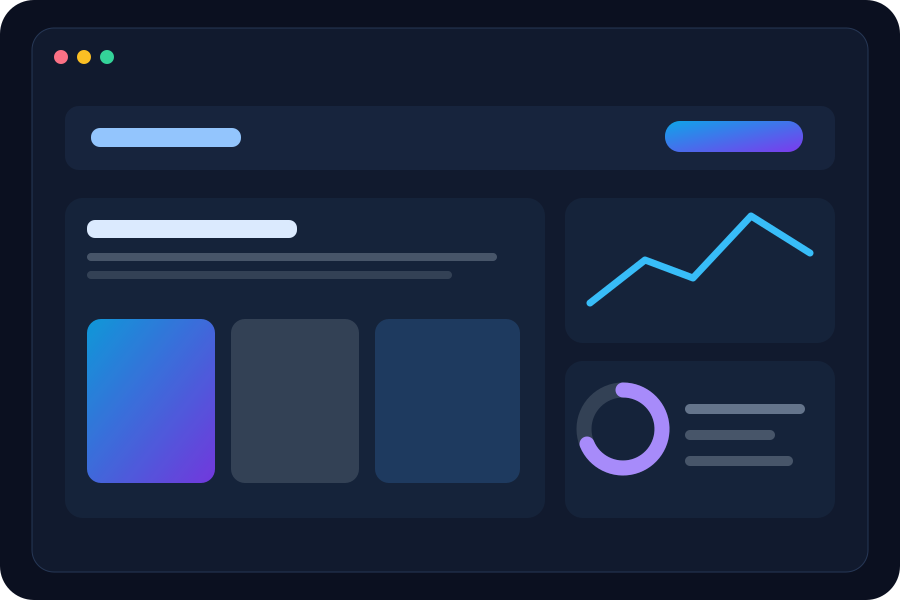

GRAPHIC ANIMATION I
Grafik Animasyon çalışmam
Grafik Animasyon I dersi kapsamında hazırladığım çalışmanın video sunumu. Projenin kaynak dosyaları artık elimde olmadığı için çalışmayı YouTube videosu üzerinden paylaşıyorum.
YouTube'da izle ↗Tasarım, görsel iletişim ve web geliştirme alanlarında yaptığım seçili çalışmalar.
Grafik Animasyon I dersi kapsamında hazırladığım çalışmanın video sunumu. Projenin kaynak dosyaları artık elimde olmadığı için çalışmayı YouTube videosu üzerinden paylaşıyorum.
YouTube'da izle ↗Web Tasarımının Temelleri dersi için daha önce hazırladığım projenin video sunumu. Kaynak dosyaları bulunmadığından proje videosu bağlantısı eklenmiştir.
YouTube'da izle ↗Not: Videolar YouTube üzerinden gömülüdür. Kaynak proje dosyaları paylaşılmadığı için sayfada video sunumları kullanılmıştır.

Kart yapıları, boşluk kullanımı ve güçlü tipografiyle oluşturulmuş örnek bir kişisel panel arayüzü. Bu çalışma, okunabilirlik ve görsel hiyerarşi üzerine bir tasarım denemesidir.

Grafik Animasyon I dersi için örnek çalışma olarak hazırlanan poster kompozisyonu. Renk geçişleri, tipografi ve geometrik formlarla hareket hissi oluşturmayı amaçlar.

Dairesel formlar ve tekrar eden çizgiler kullanılarak oluşturulmuş hareket grafiği konsepti. Ritim, denge ve geçiş ilişkileri üzerine odaklanır.
Bu bölümdeki SVG görseller portfolyo tasarımını destekleyen örnek görsellerdir. Ders kapsamında yaptığım gerçek çalışmalar yukarıdaki YouTube video alanlarında yer almaktadır.